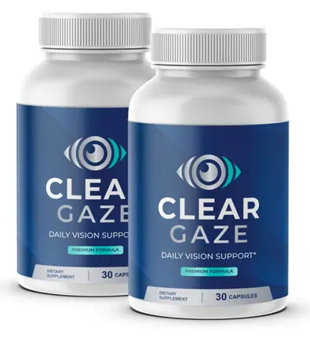
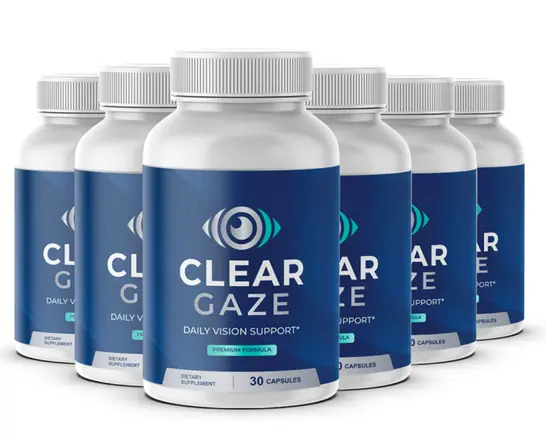
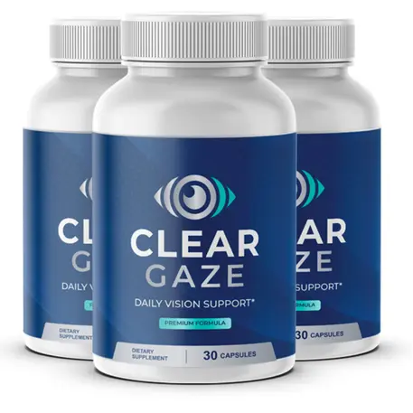

Enjoy FREE SHIPPING on 3 and 6-Bottle Orders!
*For long-term nerve support, we recommend choosing the 6 bottle option
2 BOTTLES
60 Days

$79
per Bottle

TOTAL: $358 $158
- You save $200
- 60-day guarantee
+ Shipping
Best Value!
6 BOTTLES
180 Days
Save$588

$49
per Bottle

TOTAL: $882 $294
- You save $588
- 2 free bonus
- Biggest discount
- 60-day guarantee
FREE Shipping
3 BOTTLES
90 Days

$69
per Bottle

TOTAL: $588 $207
- You save $381
- 2 free bonus
- 60-day guarantee
FREE Shipping